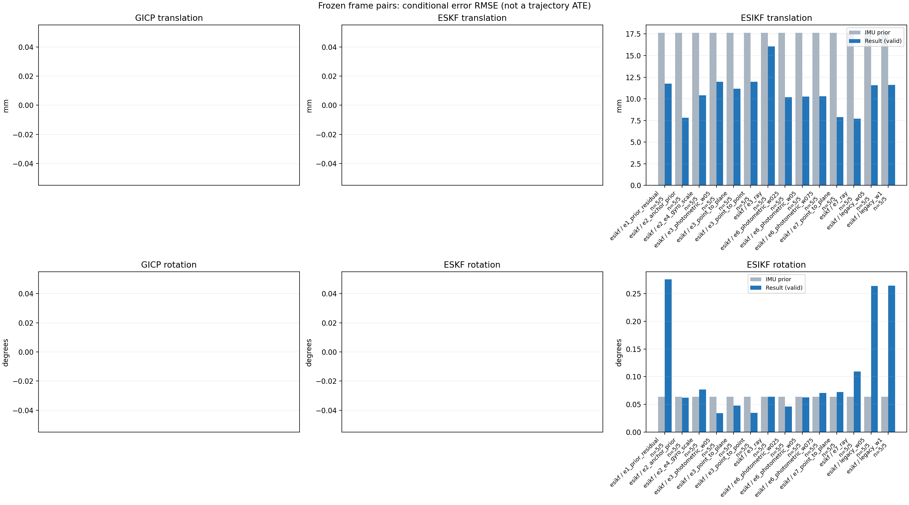

20261015_112845_yaw_left · depth=disparity_cache · cache=6506ba4733feb12187e1
模型视差：/home/ubuntu22/slam/SIO_SLAM/models/tensorrt/disp_896x448_fp16.plan；engine SHA256=604cf6ac1f705c877260711730dd5d2d58c2a21f3020c03c668401ef7fb1e768。输入为生产裁剪与光照处理后的 RGB 0..255；此实验使用原始浮点像素视差，不应用完整前端的邻域视差后处理。
原始 ONNX SHA256：e9f49736a65d68d06681add463866b6defdf78fdd7f4f50f6cc941b682fdc0bc。
代价体图改写验证：ONNX Runtime 固定随机特征输入，最大绝对误差 0；该项检查图改写，完整模型精度仍需由录制数据评估。
配准代码版本：744ac2d993ae629b0cc44a3b1d995e04ab4fad48；观测生成版本：744ac2d993ae629b0cc44a3b1d995e04ab4fad48。
固定图像对与纯 IMU 先验；ESKF 回放固定 GICP 观测，ESIKF 直接读取点云。真值只用于此报告。
同时查看 converged 与 solver_status：上游默认 Stereo 在 max_iter / stopped_at_minimum 时也可能置 converged=true。valid 表示输入检查通过，不表示精度提升。欧氏 GICP 未提供独立的点距 RMSE，该列显示 NaN。
误差按每对图像的锚点计算，单位 m / degrees。此处 RMSE 不是全序列 ATE；末帧受同一锚点条件约束。NIS 与条件马氏距离是诊断量，少量相关图像对不能用于宣称协方差已校准。
全部指标 CSV · R / P / K 矩阵 CSV · Stereo 求解逐轮 CSV · ESIKF 逐轮 CSV · 配置快照 · 矢量图
unflagged 排除纯惯性先验平移误差超过 50 mm 的图像对；whitened 为误差按协方差白化后的每自由度均值，协方差与实际误差相符时约为 1。
| stage | method | variant | valid | total | result_translation_rmse_m | result_rotation_rmse_deg | result_translation_median_m | result_rotation_median_deg | result_translation_rmse_unflagged_m | result_rotation_rmse_unflagged_deg | improved_translation | improved_rotation | posterior_whitened_by_P_rot_mean | posterior_whitened_by_P_trans_mean |
|---|---|---|---|---|---|---|---|---|---|---|---|---|---|---|
| esikf | esikf | e1_prior_residual | 5 | 5 | 0.011741 | 0.27545 | 0.006661 | 0.12477 | 0.011741 | 0.27545 | 2 | 1 | 117.65 | 136.75 |
| esikf | esikf | e2_anchor_prior | 5 | 5 | 0.0078248 | 0.06239 | 0.0063675 | 0.010382 | 0.0078248 | 0.06239 | 2 | 3 | 243.44 | 201.77 |
| esikf | esikf | e2_e4_gyro_scale | 5 | 5 | 0.010405 | 0.077057 | 0.0055689 | 0.036128 | 0.010405 | 0.077057 | 2 | 2 | 24.254 | 135.81 |
| esikf | esikf | e3_photometric_w05 | 5 | 5 | 0.011967 | 0.034505 | 0.0036373 | 0.0099672 | 0.011967 | 0.034505 | 3 | 2 | 2.8565 | 8.2004 |
| esikf | esikf | e3_point_to_plane | 5 | 5 | 0.011177 | 0.047902 | 0.0034731 | 0.008826 | 0.011177 | 0.047902 | 2 | 2 | 2.7707 | 3.5422 |
| esikf | esikf | e3_point_to_point | 5 | 5 | 0.011965 | 0.034532 | 0.0036378 | 0.0099651 | 0.011965 | 0.034532 | 3 | 2 | 2.8562 | 8.2013 |
| esikf | esikf | e3_ray | 5 | 5 | 0.016057 | 0.063863 | 0.0033862 | 0.010052 | 0.016057 | 0.063863 | 3 | 2 | 2.6462 | 4.3319 |
| esikf | esikf | e6_photometric_w025 | 5 | 5 | 0.010171 | 0.046121 | 0.0049441 | 0.024316 | 0.010171 | 0.046121 | 2 | 1 | 5.6378 | 37.205 |
| esikf | esikf | e6_photometric_w05 | 5 | 5 | 0.010271 | 0.062512 | 0.005234 | 0.03078 | 0.010271 | 0.062512 | 2 | 2 | 11.013 | 68.824 |
| esikf | esikf | e6_photometric_w075 | 5 | 5 | 0.010314 | 0.070411 | 0.0054481 | 0.034097 | 0.010314 | 0.070411 | 2 | 2 | 16.59 | 101.74 |
| esikf | esikf | e7_point_to_plane | 5 | 5 | 0.0078761 | 0.072292 | 0.0013264 | 0.017761 | 0.0078761 | 0.072292 | 2 | 1 | 5.2005 | 15.35 |
| esikf | esikf | e7_ray | 5 | 5 | 0.0076973 | 0.10956 | 0.0056321 | 0.009956 | 0.0076973 | 0.10956 | 2 | 2 | 3.3613 | 15.617 |
| esikf | esikf | legacy_w05 | 5 | 5 | 0.011584 | 0.26383 | 0.006262 | 0.10603 | 0.011584 | 0.26383 | 2 | 1 | 49.907 | 65.644 |
| esikf | esikf | legacy_w1 | 5 | 5 | 0.011605 | 0.26422 | 0.0062636 | 0.10769 | 0.011605 | 0.26422 | 2 | 1 | 99.748 | 130.89 |

| stage | case | method | variant | status | solver_status | inliers | converged | covariance_convention | covariance_from_hessian | fitness | registration_rmse_m | prior_trans_error_m | result_trans_error_m | prior_rot_error_deg | result_rot_error_deg | prior_flagged | R_rot_trace_rad2 | R_pos_trace_m2 | nis_regularized | posterior_whitened_by_P_rot | posterior_whitened_by_P_trans |
|---|---|---|---|---|---|---|---|---|---|---|---|---|---|---|---|---|---|---|---|---|---|
| esikf | static_start | esikf | legacy_w1 | updated | converged | 23390 | 1 | 1 | 0 | 0 | 7.8303e-05 | 0.0043017 | 0.0034263 | 0.022404 | 0 | 4.4444e-08 | 8.4525e-07 | nan | 8.0614 | 24.328 | |
| esikf | static_start | esikf | legacy_w05 | updated | converged | 23389 | 1 | 1 | 0 | 0 | 7.8303e-05 | 0.0043058 | 0.0034263 | 0.022448 | 0 | 8.8869e-08 | 1.6897e-06 | nan | 4.0524 | 12.28 | |
| esikf | static_start | esikf | e1_prior_residual | updated | converged | 23400 | 1 | 1 | 0 | 0 | 7.8303e-05 | 0.0060646 | 0.0034263 | 0.034655 | 0 | 4.4107e-08 | 8.2819e-07 | nan | 15.761 | 49.44 | |
| esikf | static_start | esikf | e2_anchor_prior | updated | converged | 23376 | 1 | 1 | 0 | 0 | 7.8303e-05 | 0.00077501 | 0.0034263 | 0.0030956 | 0 | 4.4451e-08 | 8.4842e-07 | nan | 2.8264 | 4.8817 | |
| esikf | static_start | esikf | e2_e4_gyro_scale | updated | converged | 23376 | 1 | 1 | 0 | 0 | 7.8303e-05 | 0.00077502 | 0.0034263 | 0.003095 | 0 | 4.4451e-08 | 8.4842e-07 | nan | 2.8183 | 4.8813 | |
| esikf | static_start | esikf | e6_photometric_w075 | updated | converged | 23377 | 1 | 1 | 0 | 0 | 7.8303e-05 | 0.00066706 | 0.0034263 | 0.003228 | 0 | 5.9222e-08 | 1.1291e-06 | nan | 2.9965 | 3.1867 | |
| esikf | static_start | esikf | e6_photometric_w05 | updated | converged | 23377 | 1 | 1 | 0 | 0 | 7.8303e-05 | 0.00052539 | 0.0034263 | 0.0033501 | 0 | 8.8817e-08 | 1.6931e-06 | nan | 3.1651 | 1.6822 | |
| esikf | static_start | esikf | e6_photometric_w025 | updated | converged | 23377 | 1 | 1 | 0 | 0 | 7.8303e-05 | 0.00031638 | 0.0034263 | 0.0034368 | 0 | 1.7752e-07 | 3.382e-06 | nan | 3.2902 | 0.49168 | |
| esikf | static_start | esikf | e7_ray | updated | converged | 23378 | 1 | 1 | 0 | 0 | 7.8303e-05 | 0.00040162 | 0.0034263 | 0.0034101 | 0 | 0.040219 | 4.1035e-05 | nan | 3.2705 | 0.66126 | |
| esikf | static_start | esikf | e7_point_to_plane | updated | converged | 23377 | 1 | 1 | 0 | 0 | 7.8303e-05 | 0.0002831 | 0.0034263 | 0.0033985 | 0 | 5.2345e-07 | 4.9297e-06 | nan | 3.3827 | 0.31618 | |
| esikf | static_start | esikf | e3_point_to_point | updated | converged | 23377 | 1 | 1 | 0 | 0 | 7.8303e-05 | 6.5759e-05 | 0.0034263 | 0.0034311 | 0 | 2.432e-06 | 5.0101e-05 | nan | 3.2975 | 0.015781 | |
| esikf | static_start | esikf | e3_photometric_w05 | updated | converged | 23377 | 1 | 1 | 0 | 0 | 7.8303e-05 | 6.5746e-05 | 0.0034263 | 0.003431 | 0 | 2.4308e-06 | 5.0177e-05 | nan | 3.2974 | 0.015775 | |
| esikf | static_start | esikf | e3_ray | updated | converged | 23377 | 1 | 1 | 0 | 0 | 7.8303e-05 | 7.9205e-05 | 0.0034263 | 0.003426 | 0 | 3.5569 | 0.003574 | nan | 3.2928 | 0.022364 | |
| esikf | static_start | esikf | e3_point_to_plane | updated | converged | 23377 | 1 | 1 | 0 | 0 | 7.8303e-05 | 8.3875e-05 | 0.0034263 | 0.0034295 | 0 | 2.58e-05 | 0.00014859 | nan | 3.3002 | 0.025114 | |
| esikf | sync_motion | esikf | legacy_w1 | updated | converged | 23395 | 1 | 1 | 0 | 0 | 0.00039414 | 0.010667 | 0.010052 | 0.078085 | 0 | 4.7336e-08 | 8.4119e-07 | nan | 77.151 | 166.11 | |
| esikf | sync_motion | esikf | legacy_w05 | updated | converged | 23396 | 1 | 1 | 0 | 0 | 0.00039414 | 0.010663 | 0.010052 | 0.077928 | 0 | 9.4612e-08 | 1.6806e-06 | nan | 38.605 | 83.111 | |
| esikf | sync_motion | esikf | e1_prior_residual | updated_not_converged | max_iterations | 23395 | 0 | 1 | 0 | 0 | 0.00039414 | 0.011193 | 0.010052 | 0.078654 | 0 | 4.7317e-08 | 8.4154e-07 | nan | 80.719 | 180.43 | |
| esikf | sync_motion | esikf | e2_anchor_prior | updated | converged | 23333 | 1 | 1 | 0 | 0 | 0.00039414 | 0.0027696 | 0.010052 | 0.010382 | 0 | 4.7944e-08 | 8.6611e-07 | nan | 40.501 | 60.783 | |
| esikf | sync_motion | esikf | e2_e4_gyro_scale | updated | converged | 23349 | 1 | 1 | 0 | 0 | 0.00039414 | 0.0024626 | 0.010052 | 0.036128 | 0 | 4.7882e-08 | 8.6433e-07 | nan | 18.463 | 27.655 | |
| esikf | sync_motion | esikf | e6_photometric_w075 | updated | converged | 23348 | 1 | 1 | 0 | 0 | 0.00039414 | 0.0020378 | 0.010052 | 0.034097 | 0 | 6.3915e-08 | 1.157e-06 | nan | 13.114 | 17.239 | |
| esikf | sync_motion | esikf | e6_photometric_w05 | updated | converged | 23342 | 1 | 1 | 0 | 0 | 0.00039414 | 0.0015341 | 0.010052 | 0.03078 | 0 | 9.5788e-08 | 1.7287e-06 | nan | 8.4378 | 8.7756 | |
| esikf | sync_motion | esikf | e6_photometric_w025 | updated | converged | 23336 | 1 | 1 | 0 | 0 | 0.00039414 | 0.00096961 | 0.010052 | 0.024316 | 0 | 1.9152e-07 | 3.4535e-06 | nan | 4.026 | 2.9874 | |
| esikf | sync_motion | esikf | e7_ray | updated | converged | 23314 | 1 | 1 | 0 | 0 | 0.00039414 | 0.00049118 | 0.010052 | 0.009956 | 0 | 0.0084721 | 1.2899e-05 | nan | 0.35191 | 0.59355 | |
| esikf | sync_motion | esikf | e7_point_to_plane | updated | converged | 23322 | 1 | 1 | 0 | 0 | 0.00039414 | 0.0010232 | 0.010052 | 0.027604 | 0 | 5.3884e-07 | 4.7672e-06 | nan | 4.3241 | 3.2566 | |
| esikf | sync_motion | esikf | e3_point_to_point | updated | converged | 23334 | 1 | 1 | 0 | 0 | 0.00039414 | 0.00039881 | 0.010052 | 0.0099651 | 0 | 2.6202e-06 | 5.1137e-05 | nan | 0.39927 | 0.30379 | |
| esikf | sync_motion | esikf | e3_photometric_w05 | updated | converged | 23334 | 1 | 1 | 0 | 0 | 0.00039414 | 0.00039877 | 0.010052 | 0.0099672 | 0 | 2.6188e-06 | 5.1208e-05 | nan | 0.39948 | 0.30369 | |
| esikf | sync_motion | esikf | e3_ray | updated | converged | 23334 | 1 | 1 | 0 | 0 | 0.00039414 | 0.00039304 | 0.010052 | 0.010052 | 0 | 0.75296 | 0.0011261 | nan | 0.35861 | 0.28964 | |
| esikf | sync_motion | esikf | e3_point_to_plane | updated | converged | 23334 | 1 | 1 | 0 | 0 | 0.00039414 | 0.00039836 | 0.010052 | 0.008826 | 0 | 2.6335e-05 | 0.00014427 | nan | 0.27921 | 0.30313 | |
| esikf | main_motion | esikf | legacy_w1 | updated | converged | 17571 | 1 | 1 | 0 | 0 | 0.0033198 | 0.0062636 | 0.017216 | 0.15732 | 0 | 1.0517e-07 | 1.0516e-06 | nan | 65.761 | 39.988 | |
| esikf | main_motion | esikf | legacy_w05 | updated | converged | 17569 | 1 | 1 | 0 | 0 | 0.0033198 | 0.006262 | 0.017216 | 0.15643 | 0 | 2.1032e-07 | 2.1027e-06 | nan | 32.681 | 20.014 | |
| esikf | main_motion | esikf | e1_prior_residual | updated_not_converged | max_iterations | 17614 | 0 | 1 | 0 | 0 | 0.0033198 | 0.006661 | 0.017216 | 0.20311 | 0 | 1.0365e-07 | 1.0366e-06 | nan | 129.98 | 46.725 | |
| esikf | main_motion | esikf | e2_anchor_prior | updated | converged | 17544 | 1 | 1 | 0 | 0 | 0.0033198 | 0.0063675 | 0.017216 | 0.017169 | 0 | 1.0666e-07 | 1.0708e-06 | nan | 121.15 | 111.43 | |
| esikf | main_motion | esikf | e2_e4_gyro_scale | updated_not_converged | max_iterations | 17559 | 0 | 1 | 0 | 0 | 0.0033198 | 0.0055689 | 0.017216 | 0.11933 | 0 | 1.0549e-07 | 1.0575e-06 | nan | 70.492 | 37.888 | |
| esikf | main_motion | esikf | e6_photometric_w075 | updated | converged | 17566 | 1 | 1 | 0 | 0 | 0.0033198 | 0.0054481 | 0.017216 | 0.10444 | 0 | 1.402e-07 | 1.4101e-06 | nan | 43.155 | 28.548 | |
| esikf | main_motion | esikf | e6_photometric_w05 | updated | converged | 17546 | 1 | 1 | 0 | 0 | 0.0033198 | 0.005234 | 0.017216 | 0.093032 | 0 | 2.0886e-07 | 2.1115e-06 | nan | 25.592 | 19.498 | |
| esikf | main_motion | esikf | e6_photometric_w025 | updated | converged | 17531 | 1 | 1 | 0 | 0 | 0.0033198 | 0.0049441 | 0.017216 | 0.066072 | 0 | 4.247e-07 | 4.2597e-06 | nan | 7.6998 | 11.288 | |
| esikf | main_motion | esikf | e7_ray | updated | converged | 17566 | 1 | 1 | 0 | 0 | 0.0033198 | 0.0056321 | 0.017216 | 0.021003 | 0 | 0.018271 | 1.6735e-05 | nan | 0.21734 | 18.546 | |
| esikf | main_motion | esikf | e7_point_to_plane | updated | converged | 17564 | 1 | 1 | 0 | 0 | 0.0033198 | 0.0054138 | 0.017216 | 0.017761 | 0 | 7.9578e-07 | 4.1497e-06 | nan | 0.49547 | 14.926 | |
| esikf | main_motion | esikf | e3_point_to_point | updated | converged | 17517 | 1 | 1 | 0 | 0 | 0.0033198 | 0.0036378 | 0.017216 | 0.024807 | 0 | 5.8394e-06 | 6.3568e-05 | nan | 0.3801 | 2.4831 | |
| esikf | main_motion | esikf | e3_photometric_w05 | updated | converged | 17517 | 1 | 1 | 0 | 0 | 0.0033198 | 0.0036373 | 0.017216 | 0.024801 | 0 | 5.8356e-06 | 6.3673e-05 | nan | 0.37989 | 2.4815 | |
| esikf | main_motion | esikf | e3_ray | updated | converged | 17521 | 1 | 1 | 0 | 0 | 0.0033198 | 0.0033862 | 0.017216 | 0.017258 | 0 | 1.8838 | 0.001715 | nan | 0.14672 | 1.7716 | |
| esikf | main_motion | esikf | e3_point_to_plane | updated | converged | 17525 | 1 | 1 | 0 | 0 | 0.0033198 | 0.0034731 | 0.017216 | 0.018191 | 0 | 3.949e-05 | 0.00012719 | nan | 0.16832 | 2.0108 | |
| esikf | main_motion_long | esikf | legacy_w1 | updated | converged | 12965 | 1 | 1 | 0 | 0 | 0.025379 | 0.021833 | 0.14096 | 0.10769 | 0 | 1.5083e-07 | 1.1921e-06 | nan | 14.42 | 397.31 | |
| esikf | main_motion_long | esikf | legacy_w05 | updated | converged | 12965 | 1 | 1 | 0 | 0 | 0.025379 | 0.021782 | 0.14096 | 0.10603 | 0 | 3.0185e-07 | 2.3828e-06 | nan | 7.0327 | 199.55 | |
| esikf | main_motion_long | esikf | e1_prior_residual | updated_not_converged | max_iterations | 12948 | 0 | 1 | 0 | 0 | 0.025379 | 0.02129 | 0.14096 | 0.12477 | 0 | 1.5168e-07 | 1.1917e-06 | nan | 19.196 | 376.88 | |
| esikf | main_motion_long | esikf | e2_anchor_prior | updated_not_converged | max_iterations | 13006 | 0 | 1 | 0 | 0 | 0.025379 | 0.014197 | 0.14096 | 0.13791 | 0 | 1.5008e-07 | 1.1688e-06 | nan | 1040.8 | 598.27 | |
| esikf | main_motion_long | esikf | e2_e4_gyro_scale | updated_not_converged | max_iterations | 12947 | 0 | 1 | 0 | 0 | 0.025379 | 0.021163 | 0.14096 | 0.11876 | 0 | 1.5169e-07 | 1.191e-06 | nan | 17.627 | 375.17 | |
| esikf | main_motion_long | esikf | e6_photometric_w075 | updated_not_converged | max_iterations | 12946 | 0 | 1 | 0 | 0 | 0.025379 | 0.020974 | 0.14096 | 0.11259 | 0 | 2.0193e-07 | 1.5875e-06 | nan | 11.99 | 277.77 | |
| esikf | main_motion_long | esikf | e6_photometric_w05 | updated_not_converged | max_iterations | 12943 | 0 | 1 | 0 | 0 | 0.025379 | 0.020896 | 0.14096 | 0.099474 | 0 | 3.0295e-07 | 2.3796e-06 | nan | 6.3481 | 185.54 | |
| esikf | main_motion_long | esikf | e6_photometric_w025 | updated_not_converged | max_iterations | 12959 | 0 | 1 | 0 | 0 | 0.025379 | 0.020412 | 0.14096 | 0.075086 | 0 | 6.0485e-07 | 4.7551e-06 | nan | 1.8908 | 90.905 | |
| esikf | main_motion_long | esikf | e7_ray | updated_not_converged | max_iterations | 13047 | 0 | 1 | 0 | 0 | 0.025379 | 0.014716 | 0.14096 | 0.2438 | 0 | 0.0078014 | 8.0787e-06 | nan | 0.8564 | 40.426 | |
| esikf | main_motion_long | esikf | e7_point_to_plane | updated_not_converged | max_iterations | 12917 | 0 | 1 | 0 | 0 | 0.025379 | 0.016672 | 0.14096 | 0.15814 | 0 | 1.1355e-06 | 4.2873e-06 | nan | 5.2177 | 57.145 | |
| esikf | main_motion_long | esikf | e3_point_to_point | updated_not_converged | max_iterations | 12970 | 0 | 1 | 0 | 0 | 0.025379 | 0.018661 | 0.14096 | 0.072175 | 0 | 8.335e-06 | 7.1014e-05 | nan | 0.3519 | 7.9117 | |
| esikf | main_motion_long | esikf | e3_photometric_w05 | updated_not_converged | max_iterations | 12971 | 0 | 1 | 0 | 0 | 0.025379 | 0.018654 | 0.14096 | 0.072112 | 0 | 8.3285e-06 | 7.1043e-05 | nan | 0.35277 | 7.8999 | |
| esikf | main_motion_long | esikf | e3_ray | updated | converged | 13007 | 1 | 1 | 0 | 0 | 0.025379 | 0.022792 | 0.14096 | 0.14127 | 0 | 0.87425 | 0.00075078 | nan | 0.28619 | 3.8627 | |
| esikf | main_motion_long | esikf | e3_point_to_plane | updated_not_converged | max_iterations | 12999 | 0 | 1 | 0 | 0 | 0.025379 | 0.018284 | 0.14096 | 0.105 | 0 | 5.601e-05 | 0.00013572 | nan | 0.27725 | 5.301 | |
| esikf | static_end | esikf | legacy_w1 | updated | converged | 9222 | 1 | 1 | 0 | 0 | 0.03002 | 0.0050241 | 0.004953 | 0.55327 | 0 | 1.5133e-07 | 9.04e-07 | nan | 333.35 | 26.687 | |
| esikf | static_end | esikf | legacy_w05 | updated | converged | 9220 | 1 | 1 | 0 | 0 | 0.03002 | 0.0050072 | 0.004953 | 0.55295 | 0 | 3.0245e-07 | 1.8064e-06 | nan | 167.17 | 13.266 | |
| esikf | static_end | esikf | e1_prior_residual | updated_not_converged | max_iterations | 9224 | 0 | 1 | 0 | 0 | 0.03002 | 0.0054363 | 0.004953 | 0.56139 | 0 | 1.5159e-07 | 9.0712e-07 | nan | 342.62 | 30.29 | |
| esikf | static_end | esikf | e2_anchor_prior | updated_not_converged | max_iterations | 9131 | 0 | 1 | 0 | 0 | 0.03002 | 0.0074674 | 0.004953 | 0.0055363 | 0 | 1.4889e-07 | 8.9015e-07 | nan | 11.94 | 233.47 | |
| esikf | static_end | esikf | e2_e4_gyro_scale | updated_not_converged | max_iterations | 9131 | 0 | 1 | 0 | 0 | 0.03002 | 0.0074674 | 0.004953 | 0.005537 | 0 | 1.4889e-07 | 8.9015e-07 | nan | 11.869 | 233.45 | |
| esikf | static_end | esikf | e6_photometric_w075 | updated_not_converged | max_iterations | 9144 | 0 | 1 | 0 | 0 | 0.03002 | 0.0075948 | 0.004953 | 0.0055016 | 0 | 1.9832e-07 | 1.1854e-06 | nan | 11.695 | 181.98 | |
| esikf | static_end | esikf | e6_photometric_w05 | updated_not_converged | max_iterations | 9162 | 0 | 1 | 0 | 0 | 0.03002 | 0.0077987 | 0.004953 | 0.0054667 | 0 | 2.9711e-07 | 1.778e-06 | nan | 11.519 | 128.62 | |
| esikf | static_end | esikf | e6_photometric_w025 | updated_not_converged | max_iterations | 9214 | 0 | 1 | 0 | 0 | 0.03002 | 0.008668 | 0.004953 | 0.0054206 | 0 | 5.9142e-07 | 3.5401e-06 | nan | 11.282 | 80.355 | |
| esikf | static_end | esikf | e7_ray | updated_not_converged | max_iterations | 9031 | 0 | 1 | 0 | 0 | 0.03002 | 0.0068959 | 0.004953 | 0.0056185 | 0 | 0.0069075 | 8.7431e-06 | nan | 12.11 | 17.858 | |
| esikf | static_end | esikf | e7_point_to_plane | updated | converged | 8743 | 1 | 1 | 0 | 0 | 0.03002 | 0.0013264 | 0.004953 | 0.0057315 | 0 | 1.0482e-06 | 3.7898e-06 | nan | 12.583 | 1.1064 | |
| esikf | static_end | esikf | e3_point_to_point | updated_not_converged | max_iterations | 9173 | 0 | 1 | 0 | 0 | 0.03002 | 0.018818 | 0.004953 | 0.0051742 | 0 | 8.299e-06 | 5.4322e-05 | nan | 9.8523 | 30.292 | |
| esikf | static_end | esikf | e3_photometric_w05 | updated_not_converged | max_iterations | 9172 | 0 | 1 | 0 | 0 | 0.03002 | 0.018833 | 0.004953 | 0.0051744 | 0 | 8.292e-06 | 5.4383e-05 | nan | 9.8529 | 30.301 | |
| esikf | static_end | esikf | e3_ray | updated | converged | 9322 | 1 | 1 | 0 | 0 | 0.03002 | 0.027532 | 0.004953 | 0.0050482 | 0 | 0.25414 | 0.00042864 | nan | 9.1469 | 15.713 | |
| esikf | static_end | esikf | e3_point_to_plane | updated | converged | 9203 | 1 | 1 | 0 | 0 | 0.03002 | 0.016678 | 0.004953 | 0.005176 | 0 | 4.7407e-05 | 0.00010406 | nan | 9.8287 | 10.071 |